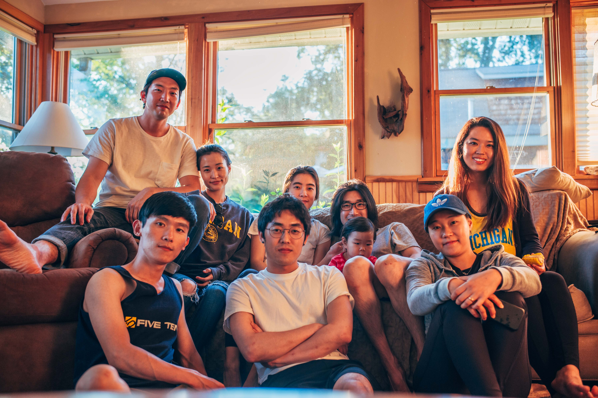
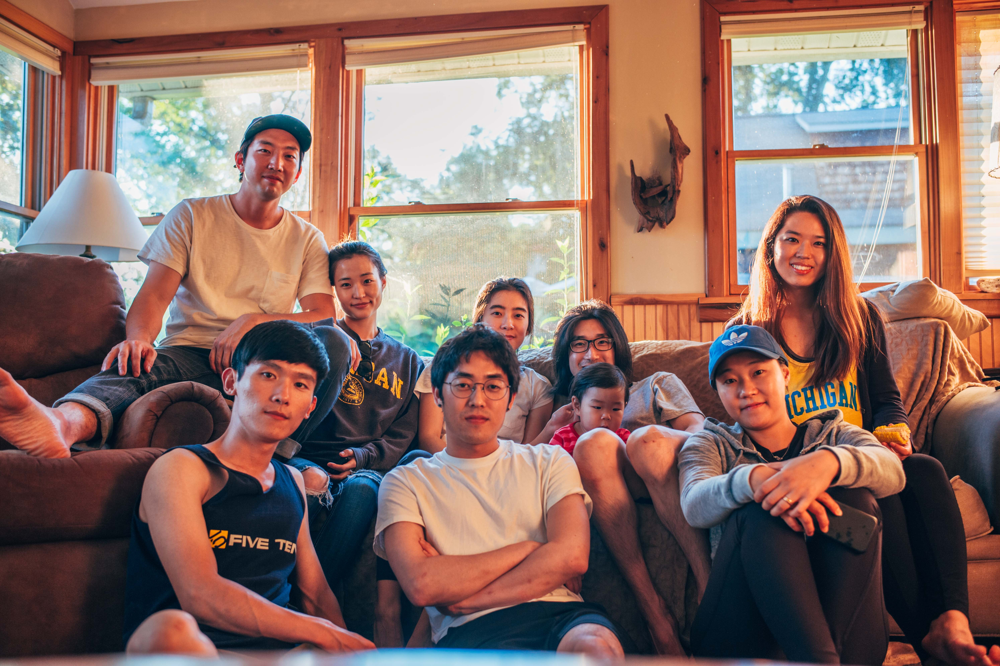
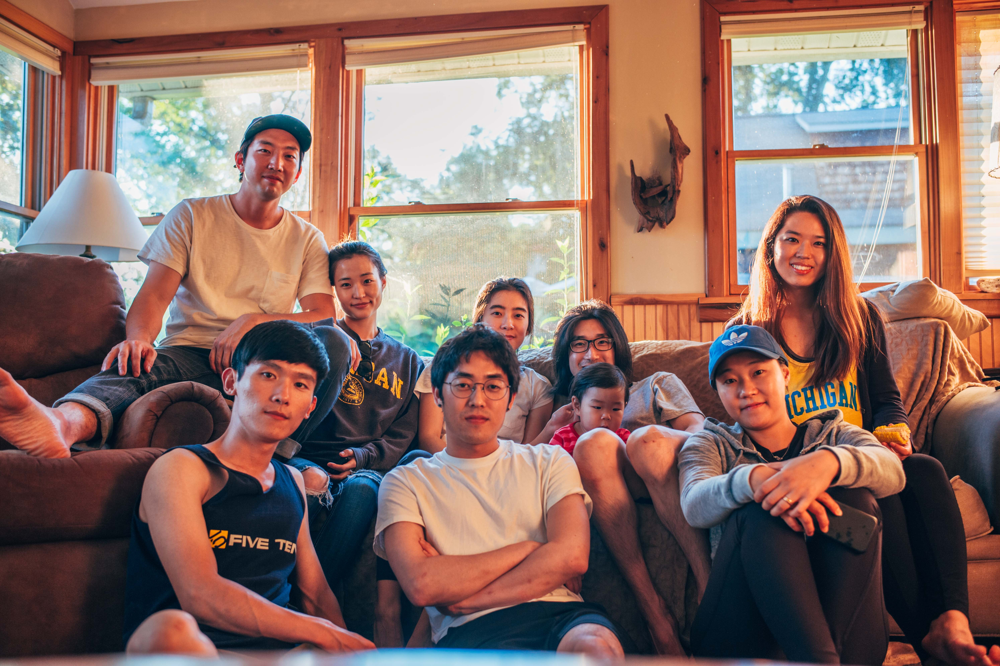

Below are some of the locations we went outdoor climbing.
-Guanella Pass, Colorado
-El Paso, Texas
-Chattanooga, Tennessee
-Bishop, California
-Coopers Rock State Park, West Virginia
-Joe’s Valley in Orangeville, Utah
